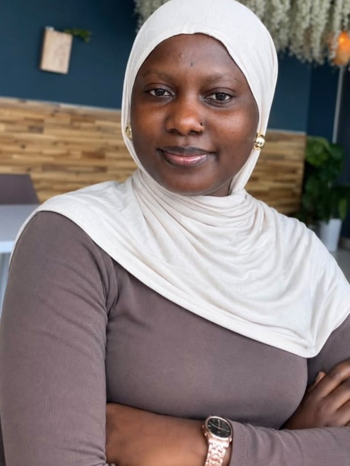

Websites that work on every phone
Clean, fast sites for small businesses, schools, churches and NGOs, so people can find you, learn what you do and contact you.
I spent four years turning raw data into decisions in public health and mining in Sierra Leone. Now I'm finishing an M.Sc. in Information and Communication Engineering in China and building a career in cybersecurity, with a focus on keeping women and young people safe online. I also design and build secure websites for businesses and organisations.

I started out in computer science and moved into data work, first in child health surveillance and then in the mining sector. That work taught me how much depends on data being accurate, available and protected.
Security became the natural next step. In 2025 I helped launch the WiCyS Sierra Leone Affiliate of Women in CyberSecurity after seeing how often girls in my country were targeted through social media, and I now lead it as President. Through the chapter I run online trainings and one-on-one sessions on staying safe online.
My graduate research looks at IoT systems and machine learning for predictive maintenance, a topic that grew directly out of my maintenance data work at Marampa Mine. I'm looking for roles and opportunities in security operations, data protection and applied security research.
I design and build websites for businesses, organisations and individuals. Because of my background in cybersecurity, every site I make is built with security in mind from the start.
Clean, fast sites for small businesses, schools, churches and NGOs, so people can find you, learn what you do and contact you.
A single link that shows your experience, projects and skills, ready to share with employers, scholarship panels and clients.
HTTPS on every site, contact forms that don't expose your email to spammers, and protection against the most common web attacks.
One-month volunteer placement supporting the national centre responsible for coordinating Sierra Leone's cybersecurity efforts.
Worked on the mine's data systems across operations and maintenance.
Managed surveillance data for a global child health programme, with a focus on data quality and the careful handling of sensitive health records.
Coursework in artificial intelligence. Research on IoT-based predictive maintenance. Expected graduation June 2027.
Graduated with Division One, the highest classification, with a final grade point of 4.31 out of 5.00. Relevant courses included Computer Network Security, Data Communication and Networking, Routing and Switching, Software Engineering, Artificial Intelligence, Relational Databases, Data Mining and Warehousing, and Web Programming.
I helped found the WiCyS Sierra Leone Affiliate of Women in CyberSecurity after noticing how many girls were being targeted and harassed through social media. With support from WiCyS Global, the chapter works to build awareness among girls and young people about technology and how to protect themselves online.
A multi-chapter survey of how IoT sensors and machine learning can predict equipment failures before they happen. Written in LaTeX with a fully verified bibliography.
A ten-chapter survey covering IoT health monitoring, COVID-19 applications, machine learning, edge computing and data privacy, with original diagrams and comparison tables.
A full project management plan for building a large interactive voice model, including schedule, risk register and resource planning.
Designed and built by hand with HTML, CSS and JavaScript. New projects will be added here as I build them.